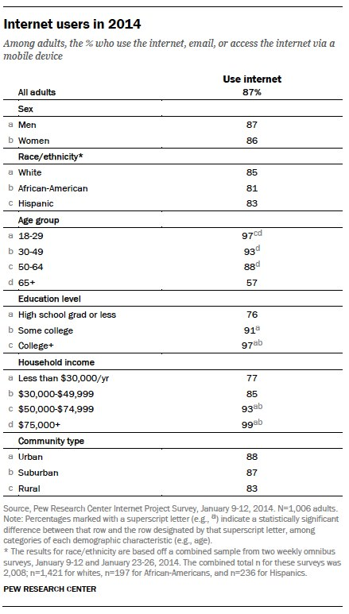
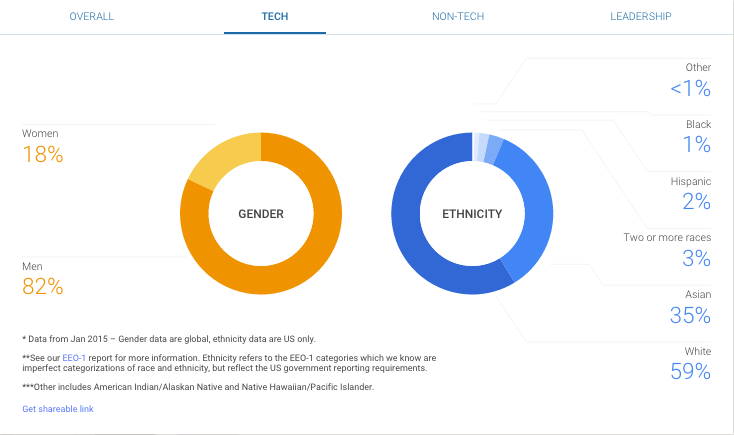

What am I getting myself into?
July 11, 2015
As someone who is just starting to code, I am trying to immerse myself not just in the mechanics of coding but also in the culture of it. In order to survive in any industry, you have to keep up with what's going on. I am definitely starting very late in the game but better start now then tomorrow.
I feel one of the very first things you need to know about something are its problems. You can't expect an industry that developed so quickly to be flawless. Considering how the internet was first opened to commercial use in 1995, most of the technology that we use everyday was only invented within the past 25 years! With such quick growth, it is no wonder that there are many cultural problems in the tech world. Just naming some of the more widely publicized problems: instances of hacking, lack of diversity, ageism, etc.
The Problem
Although there are many problems, I wanted to address just one of them for now: lack of diversity. Now why is diversity such an important thing? Well one of the biggest reasons is that the tech industry needs developers that will cater to their users. If you had a choose, you would want someone similar to yourself creating the tools that you will be using. Someone different than you may have different priorities and needs.
According to PewResearchCenter of Internet, Science, and Tech, 86% of women use the internet - 81% of African-Americans, and 83% of Hispanics use the internet.
.What isn't acceptable is that the people creating these technologies are mostly white and male. Just taking Google for example, women only make up of 18% of their tech employees - 1% African-Americans, and 2% Hispanics. These numbers are too low compared to the demographic of users.
What can be done?
Since the issue with diversity is already a recognized problem, tech giants are already investing in solutions. Scholarships are being offered to women and minorities who are pursuing a computer science major. But I think that by the time teens reach the age where they start applying for colleges, it is already too late. An introduction to coding needs to be done earlier.
Most American elementary schools had a mandatory music class where everyone had to learn how to play the recorder. It introduced the idea of music and taught the basics like how to read notes. The kids can then choose to go on to join band or orchestra in middle school/high school. Just like the recorder, an introduction to computer science should be taught during this period. If the idea is implemented earlier, children will have the time to develop their own feelings about it. And if they find that they like coding, they should also be given the opportunity to pursue it.